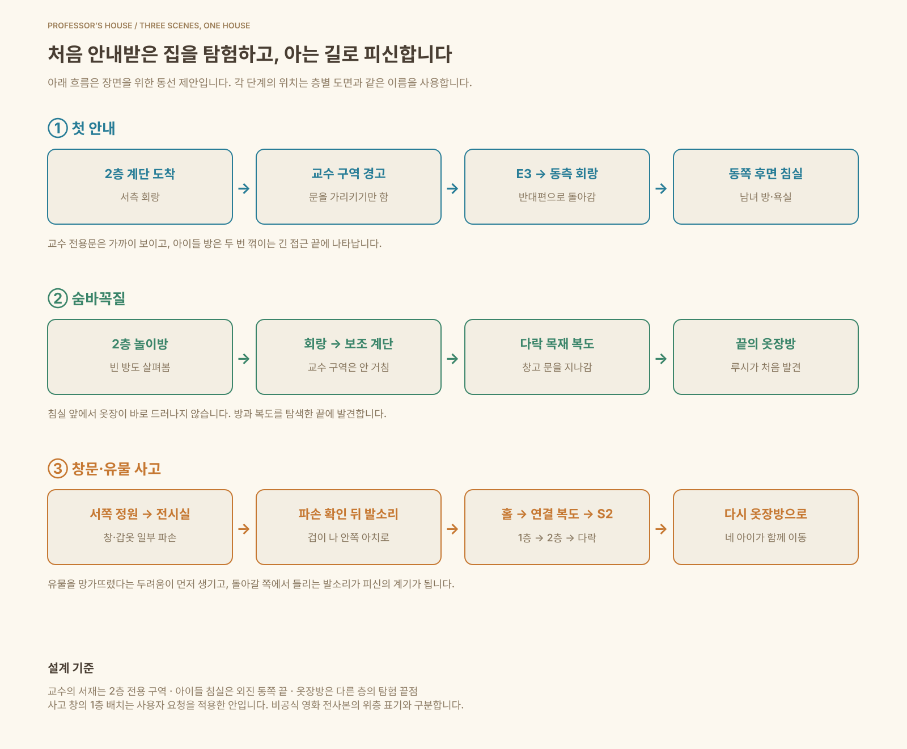

교수의 공간 · 2층 서쪽
서재·침실·개인 서고를 한 구역으로.
계단 위에서 경계문을 가리키며 경고합니다.
사고 지점을 1층 유물 전시실로 옮겼습니다. 서쪽 정원에서 친 공이 창과 갑옷 일부를 망가뜨리고, 이를 확인한 아이들이 겁을 먹고 전시실 안쪽 아치 → 홀 → 보조 계단 → 다락 옷장방으로 피신합니다.
확정 도면 v1 · 2026-10-22
층별 검토 03의 방 배치·계단·정원 관계와 세 장면의 이동 동선을 승인했습니다. 이후 모델링은 이 도면을 기준으로 진행합니다. 확정 기준 · 승인 기록
서재·침실·개인 서고를 한 구역으로.
계단 위에서 경계문을 가리키며 경고합니다.
긴 회랑을 돌아 두 번 꺾이는 침실 구역.
홀에서는 방의 문이 보이지 않습니다.
여러 방과 복도를 탐색한 끝의 발견.
이후 네 아이가 같은 길로 다시 찾아옵니다.
방을 누르면 용도와 연결 공간을 확인합니다. 색이 있는 이동선은 해당 장면의 확정 동선이며, 녹색 정원 영역은 2층·다락에도 비어 있는 야외입니다. 복도 끝은 방문·창가·붙박이장으로 마감합니다.

| 위치 | 이번 구성 |
|---|---|
| 교수 전용 구역 | 회랑에서 들어가는 경계문 한 곳. 아이들의 안내·탐험·피신 경로는 밖을 지납니다. |
| 아이들 침실 복도 끝 | S2와 연결하는 문을 없애고 끝벽·린넨장으로 마감합니다. 침실은 동측 긴 회랑에서만 접근합니다. |
| 다락 옷장방 | 보조 계단에서 복도를 걷다가 끝에서 꺾어 방문을 통과합니다. 아래 교수 공간을 지나지 않습니다. |
회랑을 따라 이어진 공용 경로와 후정 앞의 창가 전실은 유지합니다. 주요 방의 위치와 접근 방향은 유지합니다. 통행 폭·벽 두께와 카메라 여유는 후속 모델 단계에서 검증합니다.
교수 구역을 가리키는 경고, 외진 아이들 방, 숨바꼭질 중 옷장 발견, 공놀이 사고 이후 단체 피신이라는 사용자 설명을 배치 기준으로 적용했습니다. 서쪽·동쪽 구분, 정확한 방 위치, 계단 선택과 맥크리디의 접근 방향은 이 게임을 위한 설계입니다.
비공식 영화 전사본(PDF 3–5, 18–20쪽)에서도 교수 방해 금지, 숨바꼭질 중 발견, 공과 창·갑옷 사고 뒤 옷장으로 숨는 사건 순서를 확인했습니다. 다만 이 자료는 사고 창을 위층으로 적고 있습니다. 이번 안의 서쪽 정원을 향한 1층 유물 전시실 창은 요청하신 배치를 반영한 확정안이며, 영화에서 확정된 층수나 촬영장 평면으로 표시하지 않습니다.
계단·층고·정원은 이전 검토를 기준으로 유지했습니다. 다락의 회색 사선 영역은 아직 내부를 설계하지 않은 지붕 공간입니다. 방 배치와 사건 동선은 2026-10-22에 확정했습니다. Unity·기존 3D 모형에는 아직 반영하지 않았습니다.